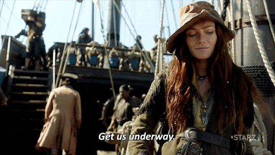

Peaky Blinders, ambientada na Inglaterra de 1919, conta a história real da gangue Peaky Blinders, formada por criminosos que prosperaram após a primeira guerra mundial
praticando assaltos, contrabando e apostas ilegais. A série acompanha o protagonista Thomas Shelby, líder do grupo, e as dificuldades que o personagem encontra ao tentar equilibrar
seu cotidiano, seus relacionamentos pessoais e seus inimigos em uma única balança.
Peaky Blinders, ambientada na Inglaterra de 1919, conta a história real da gangue Peaky Blinders, formada por criminosos que prosperaram após a primeira guerra mundial praticando assaltos, contrabando e apostas ilegais. A série acompanha o protagonista Thomas Shelby, líder do grupo, e as dificuldades que o personagem encontra ao tentar equilibrar seu cotidiano, seus relacionamentos pessoais e seus inimigos em uma única balança.
• Número de temporadas: 4 Temporadas
• Emissora: BBC
• Onde Assistir: Disponível na Netflix
Black Sails é uma série de temática pirata, que apresenta o cotidiano do capitão Flint e a tripulação do navio pirata Walrus. Muito bem ambientada, a série também traz personagens
da história, como Charles Vane e Anny Bonny. Apesar de pouco conhecida, a série fez enorme sucesso com a crítica, vencendo o Emmy três vezes.

Black Sails é uma série de temática pirata, que apresenta o cotidiano do capitão Flint e a tripulação do navio pirata Walrus. Muito bem ambientada, a série também traz personagens da história, como Charles Vane e Anny Bonny. Apesar de pouco conhecida, a série fez enorme sucesso com a crítica, vencendo o Emmy três vezes.
• Número de temporadas: 4 Temporadas
• Emissora: Starz
• Onde Assistir: Disponível na Netflix
Das mesmas criadoras da triologia de sucesso Matrix, em Sense8 oito estranhos de diferentes países - Estados Unidos, México, Índia, Quênia, Alemanha, Coréia do Sul e Inglaterra - acabam por compartilhar as habilidades um dos outros,
assim como sentimentos, paixões e pensamentos, podendo até mesmo se comunicarem frente a frente ainda que a continentes de distância. Movidos pelo estranho fenômeno, o grupo busca respostas para entender
a causa da conexão que os tornou tão próximos, ao mesmo tempo que uma organização os caça um por um, mais próxima a cada minuto.
Das mesmas criadoras da triologia de sucesso Matrix, em Sense8 oito estranhos de diferentes países - Estados Unidos, México, Índia, Quênia, Alemanha, Coréia do Sul e Inglaterra - acabam por compartilhar as habilidades um dos outros, assim como sentimentos, paixões e pensamentos, podendo até mesmo se comunicarem frente a frente ainda que a continentes de distância. Movidos pelo estranho fenômeno, o grupo busca respostas para entender a causa da conexão que os tornou tão próximos, ao mesmo tempo que uma organização os caça um por um, mais próxima a cada minuto.
• Número de temporadas: 2 Temporadas
• Emissora: Original Netflix
• Onde Assistir: Disponível na Netflix